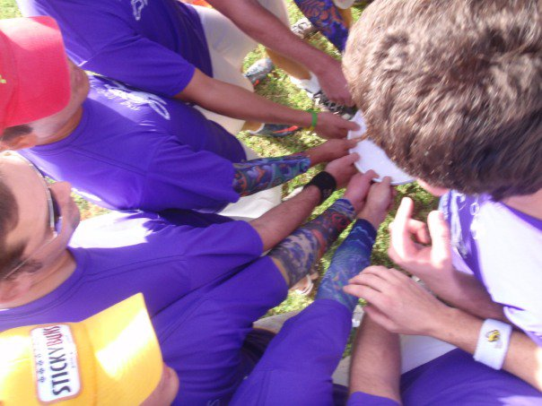

At KK23 we invented the Hip-Huck-A-Potamus. A story based mostly in fact that allowed us to partake in an amazing tournament. If you ask any of our returning members this was by far the most fun tournament/team that they have been on.
At KK24 we opened up our team to any player that wanted to return, and looked to fill any open spots with SoCal ballers who enjoyed building on our camaraderie and contributing to the Spirit Of The Game.
This year is a doozy. 25 is a big number, and we intend to go big with you. It will be our third year at Kaimana. Three might not seem like a big number next to 25 - but it is an important milestone. What's any great trilogy without it's final act? What number made Jack Tripper a household name? How many examples sounds just right? Three. Omne trium perfectum, as they say.
Won't you let us celebrate with you?
Rostering Philosophy
Almost all of our core Hippos are returning this year. 11 of our KK25-rostered players have played on the Hippos every year since our inception. The few non-returning Hippos are spawning teams of their own for KK25. You can check out our current roster and past rosters.What Being a Huckin' Hippo Means to our Organizers
We not only seek high level ultimate players from the West Coast but we recruit players that have a high standard with respects to Spirit Of The Game. When we leave the field we want our opponents to see that we embody these traits.What You Don't See
Kaimana provides an opportunity for players from established teams like Metro, 7 Figures, Mischief, Condors, and Hodags to build bonds with up and coming players that show promise but may not be on national or regional caliber teams yet. Like many instances in nature we are passing the idea of Spirit Of The Game to the next generation of players. After KK23 our team instantly became a bloat of hippos. (Yes, it's really called that!) You can see in our photos that our bonds have developed past Kaimana, to other tournaments, and transcended ultimate into real world friendships too. Highlights since last year are Barrs' going away party in LA with our San Diego contingent making the trek and Chad flying out from Denver; Chad, Stone, and Henny going to Poultry Days; and, of course, Chad and Tank sporting speedos and bow ties at One Love, One Beach. Most of these people may not have ever met without playing together last year. We ask you to accept this bid so we may keep the stampede going this year looking to be a wildcard in our pool and one of the top contributors to the spirit of your tournament.